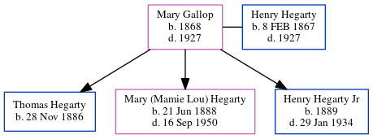

Mary Hegarty (née Gallop) 1868 - 1927
[ Home ] | [ Calendar ] | [ Surnames Index ] | [ Family History ]Mary Gallop, the great-great-grandmother of Michele Copp (née Phillips), was born in Moone, Kildare, Ireland in 18681 and married Henry Hegarty (a worked at cyclorama in grant park with whom she had 3 children: Thomas Hugh, Mary (Mamie Lou) and Henry Jr) in Kildare, Ireland in Sep 1887.
During her life, she was living in Atlanta Ward 3, Fulton, Georgia, USA in 1900 and in 19201. she arrived in 1890.
She died in 1927 in Atlanta, , Georgia.
Children
- Thomas Hugh was born on Nov 28, 1886
- Mary (Mamie Lou) was born on Jun 21, 1888
- Henry Jr was born in 1889
Citations
- 1920 United States Federal Census Online publication - Provo, UT, USA: MyFamily.com, Inc., 2005. For details on the contents of the film numbers, visit the following NARA web page: NARA. Note: Enumeration Districts 819-839 on roll 323 (Chicago City.Original data - United States of America (Marital Status: Married; Relation to Head: Wife)
Family Tree
Generated by ged2site. Last updated on Jun 15, 2024